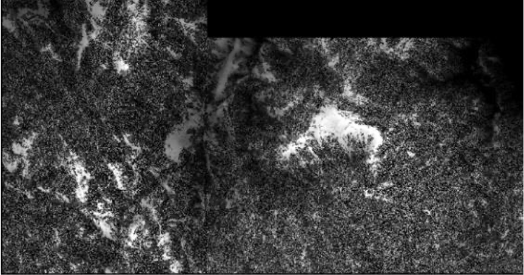
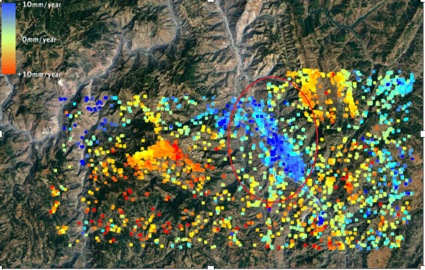

Surface Deformation Monitoring Study of Dongchuan District, Kunming City Based on InSAR Technology
Abstract
Dongchuan District in Kunming City is situated in the northern part of the Yunnan-Guizhou Plateau, within the central-northern segment of the Xiaojiang Fault Zone. Due to its special geographical location and unique geological conditions, the area is frequently affected by earthquakes, debris flows, and landslides. These geological disasters have become major factors hindering local development. This study employs time-series InSAR technology to investigate surface deformation in urban areas, adjacent valleys, and mining zones in Dongchuan. Based on the deformation results, combined with the activity of the Xiaojiang Fault, tectonic movement trends, and geological disaster patterns, this paper analyzes the causes of surface deformation in the area to contribute to disaster prevention and geological hazard forecasting.
Interferometric Synthetic Aperture Radar (InSAR) not only retains the advantages of optical remote sensing—such as low cost and large-scale imaging—but also enables all-weather, day-and-night imaging, making microwave remote sensing a uniquely effective measurement tool. In recent years, global research efforts have significantly advanced microwave remote sensing, extending its utility beyond topographic mapping to monitoring deformation caused by natural forces such as volcanic activity, tectonic shifts, and glacier movements. Microwave remote sensing has also become a leading method for land cover classification. Among radar interferometry techniques, SBAS-InSAR is particularly efficient. It selects image pairs with short temporal and spatial baselines, effectively overcoming the limitations of traditional D-InSAR caused by temporal and atmospheric decorrelation. It is widely used for monitoring slow surface deformation.
Using the ENVI SARscape platform and Sentinel-1 data, along with 30-meter resolution SRTM DEM data from NASA and high-resolution imagery from Google Earth, this study monitored slow surface deformation in Dongchuan and surrounding areas. After extensive experimentation and analysis on interferometric quality, the study reached the following conclusions:
1. Due to the north-south orientation of the Xiaojiang Fault Zone, the main deformation also follows this direction. Since SAR is less sensitive to deformation in this orientation, SBAS-InSAR performed better than traditional D-InSAR. This demonstrates the strong potential of SBAS-InSAR for long-term monitoring in geologically active areas.
2. D-InSAR was used to analyze factors affecting coherence and optimize thresholds. The study found that in high vegetation areas, phase unwrapping was ineffective, while coherence was significantly better in urban areas and bare mountainous regions. These areas yielded dense and clear deformation point results.
3. Different filtering and unwrapping methods were tested in regions with significant erosion and steep slopes. The Goldstein filter effectively reduced noise, and the minimum cost flow method improved unwrapping accuracy.
4. Spatial and temporal distribution patterns of deformation in Dongchuan were analyzed. Results indicate that fault activity is closely related to land subsidence and uplift in urban and valley regions. Time-series analysis of key areas like Dongchuan City, Tangdan Village, and Luoxue Copper Mine further confirms the utility of time-series InSAR in identifying periodic geological hazards.
Introduction
1.1 Research Background and Importance
Geological hazards can be divided into those caused by natural factors (such as tectonic movement and volcanic activity) and those caused by human activities (such as overextraction of groundwater, gas, and petroleum, or construction that exceeds the land’s bearing capacity). Most current research focuses on early warning, prevention, and post-disaster analysis of naturally induced hazards. While humans cannot prevent natural disasters, studying regions prone to such events helps us understand their patterns, allowing for better prevention and mitigation. The Dongchuan study area lies along the Xiaojiang Fault Zone, a seismically active zone located at the northeastern boundary of the Indian Plate’s collision with the Eurasian Plate. It marks the eastern boundary of the Sichuan-Yunnan Block, the eastern edge of the Tibetan Plateau, and the southern part of China’s North-South Seismic Belt. The fault runs from Zhaotong and Qujing in the north to Kunming and Yuxi in the south, crossing densely populated and industrially concentrated regions that are politically and economically significant to Yunnan Province. Dongchuan District, located on the eastern branch of the Xiaojiang Fault, is notorious for frequent debris flows. It spans 1,859 km², with 95.5% mountainous terrain. Elevation ranges from 4344 m to 695 m, and slopes steeper than 35° account for 29.1% of the area. The region faces multiple hazards, including earthquakes, landslides, fissures, rockfalls, and severe soil erosion—64.5% of the district suffers from soil loss. The combination of natural terrain and human activities like mining and agriculture exacerbates these issues, making Dongchuan one of China's most geologically hazardous regions. Surface subsidence is one of the primary urban hazards, marked by vertical ground displacement. As modern engineering projects increase in size and scale, they frequently exceed the land’s natural bearing capacity, leading to deformation. Once deformation exceeds certain thresholds, it can severely damage infrastructure, including underground pipelines, roads, buildings, and public utilities.
Research area
Research area DEM Data
Overview of InSAR Technology and the Study Area
2.1 Basic Principles of InSARInterferometric Synthetic Aperture Radar (InSAR) is a radar remote sensing technique that uses the phase difference between multiple Synthetic Aperture Radar (SAR) images to detect ground surface deformation. The working principle involves transmitting radar pulses from a satellite or aircraft to the ground. When the signal is reflected and received, both the amplitude and phase of the signal are recorded. InSAR typically uses two or more SAR images of the same area acquired at different times. By comparing the phase information of these images, the relative movement of ground targets between acquisitions can be detected. By subtracting out the known topographic phase (using DEM data), and correcting for atmospheric and noise influences, the deformation component can be isolated. The deformation is measured along the radar’s line-of-sight (LOS), not vertically.
2.2 Time-Series InSAR Techniques
Traditional D-InSAR has limitations in regions with dense vegetation or rapid temporal changes, as it suffers from coherence loss. Time-series InSAR methods, such as Persistent Scatterer InSAR (PS-InSAR) and Small Baseline Subset InSAR (SBAS-InSAR), were developed to address this.
• PS-InSAR> focuses on identifying and analyzing highly stable reflectors—called persistent scatterers—across multiple images. It is well-suited to urban areas with abundant man-made structures.
• SBAS-InSAR selects interferometric pairs with small temporal and spatial baselines. It does not require high-density persistent scatterers and is thus better for rural and natural terrains. SBAS also enables better temporal resolution of deformation processes.This study uses the SBAS approach due to Dongchuan’s complex terrain and vegetation cover. The method involves:
1. Selecting SAR image pairs with good coherence
2. Generating interferograms and unwrapping phase
3. Estimating and removing atmospheric effects
4. Deriving time-series deformation
2.3 Remote Sensing Data Used
This study uses Sentinel-1A/B SAR data from the European Space Agency (ESA), which has a C-band radar sensor with a wavelength of 5.6 cm. It provides data with a 12-day revisit period and 250 km swath width, ideal for wide-area monitoring.
• SAR Dataset: Sentinel-1 images (2021–2022)
• DEM Data: SRTM 30-meter resolution DEM (NASA)
• Auxiliary Data: Google Earth high-resolution imagery for visual comparison and validation.
The SAR images are preprocessed to ensure geometric alignment. Pairs with high coherence are selected for interferometric processing. The SRTM DEM is used to remove topographic phase. Google Earth imagery helps to identify potential deformation features and validate results visually.
Data Processing and Methodology
This study uses a total of 24 Sentinel-1A SAR images from 2021 to 2022, covering Dongchuan District and its surrounding areas. The images are in IW (Interferometric Wide) mode with VV polarization. These data are selected based on spatial coverage, baseline length, and minimal temporal decorrelation. The following preprocessing steps were performed using the ENVI SARscape module:
1. Coregistration All slave images were coregistered to a selected master image to ensure pixel-level alignment. This step is crucial for accurate phase difference calculations.
2. Interferogram Generation Interferometric pairs were formed using the SBAS strategy, ensuring small temporal and perpendicular baselines. This minimizes decorrelation and improves phase stability.
3. Coherence Estimation Coherence maps were calculated for all interferometric pairs. Coherence is a key indicator of signal quality and deformation reliability. It ranges from 0 (no correlation) to 1 (perfect correlation). Areas with coherence above 0.4 were retained for further analysis.
4. Topographic Phase Removal The Shuttle Radar Topography Mission (SRTM) 30-meter resolution DEM was used to remove the topographic phase component from the interferograms.
5. Phase Filtering The Goldstein filter was applied to reduce noise and enhance fringe visibility in the interferograms.
6. Phase Unwrapping Phase unwrapping was carried out using the Minimum Cost Flow (MCF) algorithm. This step converts wrapped phase data (between -π and π) into continuous deformation values.
7. Atmospheric Phase Screen (APS) Estimation APS artifacts were estimated and removed using statistical filtering techniques built into the SBAS workflow.
8. Time-Series Inversion
Finally, a linear regression approach was used to derive deformation rates and time-series displacement for each coherent pixel across the observation period. Baseline analysis is critical to ensure that selected SAR image pairs yield reliable results. Two types of baselines are considered:
• Temporal Baseline: The time interval between two acquisitions. Longer intervals increase the risk of decorrelation due to changes in the land surface.
• Perpendicular Baseline: The spatial distance between satellite positions. Larger values can introduce geometric decorrelation.
In this study, image pairs with temporal baselines less than 60 days and perpendicular baselines under 100 meters were selected. A total of 47 interferometric pairs were generated. A baseline time plot (not shown here) was used to visualize the distribution of selected pairs and assess the network connectivity. The dense and well-distributed pair network confirms suitability for SBAS analysis.
3.3 Coherence Distribution and Masking

Sample distribution in the experimental area, Which
red zone: urban areas
Green zone: bare land region
Blue zone : village area
Yellow zone : vegetation region
Coherent distribution curve of urban areas
Coherent distribution curve of village area
Coherent distribution curve of bare land region
Coherent distribution curve of vegetation region
3.4 Filtering and Phase Unwrapping Performance
The Goldstein filter helped suppress high-frequency noise while preserving phase fringes. Among various tested filters, Goldstein delivered the best trade-off between noise suppression and detail retention.
Goldstein filter result
Coherence diagram, interference diagram, phase untangling diagram of image pair 20150618_ 20150525
Interference image pair connection diagram
In the unwrapping step, the Minimum Cost Flow algorithm proved more robust than other methods like Delaunay triangulation or branch-cut algorithms, particularly in areas with complex terrain. This combination ensured accurate phase continuity across the network of interferometric pairs.
Plane untangling phase diagram
3D untangling phase diagram
Raster diagram of deformation rate in Los direction in dongchuan area
Schematic diagram of the main subsidence area around dongchuan district
3.5 Time-Series Deformation Estimation
Time-series deformation values were calculated for each pixel by solving a system of linear equations formed by all valid interferograms. The Least Squares method was used for inversion, yielding both the average deformation rate and displacement evolution over time. The resulting deformation maps highlight trends in surface motion across the Dongchuan area. Three key zones were selected for detailed temporal analysis: Dongchuan urban district, Tangdan Village, and Luoxue Copper Mine. These areas show varying deformation characteristics, reflecting influences such as fault activity, human infrastructure, and natural terrain.
Analysis of Deformation Results and Driving Factors
4.1 Overview of Surface Deformation in Dongchuan
Based on the SBAS-InSAR analysis of 24 Sentinel-1A images over Dongchuan District, the study produced average deformation velocity maps and time-series deformation profiles. The results show that the overall deformation pattern aligns with the regional tectonic structure, particularly the activity of the Xiaojiang Fault Zone. The deformation is mainly distributed in three types of areas, they are Urban built-up zones,River valleys,and Mining regions. The overall deformation trend in most areas is stable, with localized subsidence or uplift zones indicating active surface movement. The deformation rates range from approximately -30 mm/year to +25 mm/year.
Deformation rate map of Dongchuan area
4.2 Deformation Characteristics in Key Areas
Deformation rate and single point analysis of Tongdan and Luoxue copper mine
In the urban area of Dongchuan, the deformation rate is generally low and stable. However, small-scale localized subsidence (up to -10 mm/year) is observed near major road intersections and newly developed construction sites. This is likely caused by excavation, underground utility installation, and changes in surface load due to high-rise construction. These patterns highlight the importance of applying InSAR monitoring in urban planning and infrastructure development, especially where subsurface works are involved.
Shijiangjun south, west of the Lanniping was raised significantly
Sample point variable diagram of Dongchuan city
Variable graph of mountain sample points on the east and west sides of Dongchuan city
Tangdan Village, located near steep terrain and active mining sites, exhibits significant surface deformation. In some parts of the village, deformation rates exceed -25 mm/year, indicating active land subsidence. This area is prone to landslides and debris flows, and the deformation is closely tied to Natural slope instability, Seasonal rainfall erosion and Human activity, particularly road cutting and house construction on unstable slopes InSAR time-series graphs show that deformation intensifies during the rainy season, suggesting a strong hydrological influence on slope stability. The Luoxue Copper Mine area shows the highest deformation rates in the entire study area, with localized subsidence reaching -30 mm/year. Large-scale excavation, underground mining, and blasting activities are the main contributing factors. The deformation here is concentrated in tailing ponds, mine access roads, and the slopes surrounding excavation sites. Long-term mining operations have severely disturbed the local geological structure, causing ground instability and increasing disaster risk. Time-series analysis also reveals sudden changes in deformation during certain time windows, potentially corresponding to mining cycles or heavy rainfall events The deformation patterns across Dongchuan show strong spatial correlation with the Xiaojiang Fault system. The fault runs roughly north-south through the district. Deformation rates increase near fault intersections and fault-adjacent slopes, especially in combination with human activity such as road construction or mining. This supports the interpretation that fault creep and tectonic activity play a background role in driving gradual surface displacement, while human activities and rainfall act as triggers for sudden or accelerated movement. Areas close to secondary faults and surface fractures also show higher instability, confirming their role in controlling subsurface drainage and slope behavior. Topography significantly affects deformation distribution. Most high-deformation zones are located in steep terrain with slopes greater than 25°. These areas are particularly susceptible to gravity-driven mass movement, especially when destabilized by excavation or erosion. Land cover type also plays a key role, ,Bare land and construction zones are Higher coherence, clearer deformation signals ,Vegetated or forested areas are Lower coherence, difficult to detect subtle changes and Agricultural lands are Moderate coherence, seasonal variation in signal stability InSAR monitoring is more effective in built and barren areas due to stronger radar backscatter and lower signal variation over time. also, Human activity is a major driver of surface deformation in Dongchuan. The most affected areas coincide with ,Mining zones (e.g., Luoxue) ,Road construction corridors and Residential expansion into marginal terrain Climatic factors also contribute, especially intense summer rainfall. Precipitation softens soils, increases pore water pressure, and reduces shear strength of slopes. These effects are cumulative and may trigger landslides or slope failures when combined with tectonic activity or land use changes.
settlement diagram
Conclusion
This study uses Sentinel-1 SAR data and SBAS-InSAR technology to analyze and monitor surface deformation in Dongchuan District, Kunming. Based on systematic image processing, deformation analysis, and interpretation of key zones, the following conclusions are drawn:
1. SBAS-InSAR effectively monitors deformation in geologically active, mountainous regions Dongchuan is characterized by complex terrain, active tectonics, and frequent geological hazards. Through the SBAS-InSAR technique, this study successfully identified slow, large-area surface deformation with millimeter-level precision. The results show high consistency with known fault lines, disaster-prone zones, and high-risk human activities, demonstrating the method’s strong applicability in such environments.
2. The spatial distribution of deformation corresponds with fault activity and topography The surface deformation patterns align with the Xiaojiang Fault Zone, especially near its secondary fractures and bends. Higher deformation rates are concentrated along fault intersections and slopes with steep gradients. These zones are more sensitive to surface load changes, rainfall infiltration, and underground disturbance.
3. Human activities significantly impact local ground stability Mining operations, particularly around the Luoxue Copper Mine, lead to intense land subsidence. Similarly, road building and residential development on unstable slopes contribute to slope failures. The data reveal that surface deformation is significantly accelerated in zones where natural and anthropogenic factors overlap.
4. Time-series deformation analysis supports disaster early warning efforts By extracting time-series deformation for selected high-risk zones (urban Dongchuan, Tangdan Village, and Luoxue Mine), the study demonstrates how InSAR data can be used for temporal monitoring. This makes it possible to detect accelerating trends and periodic shifts that signal potential hazards, thereby aiding early-warning systems and risk management.